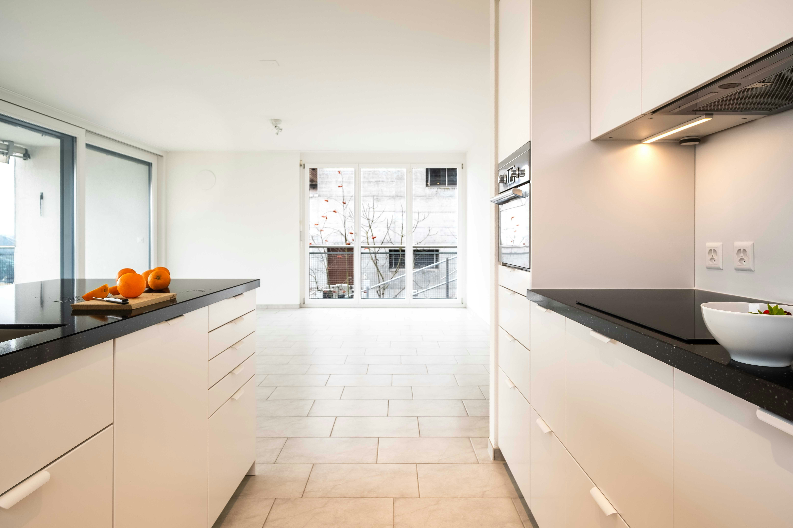
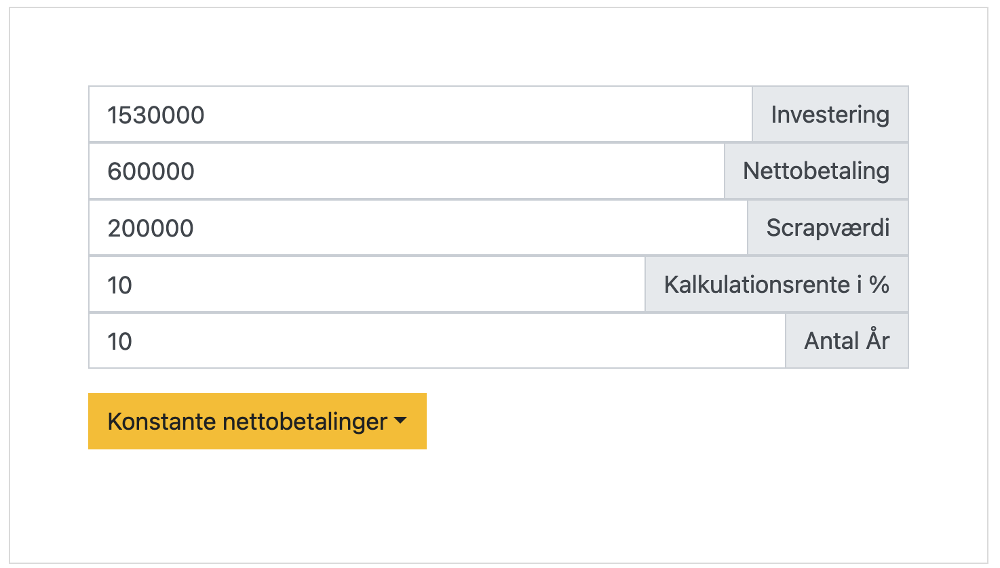
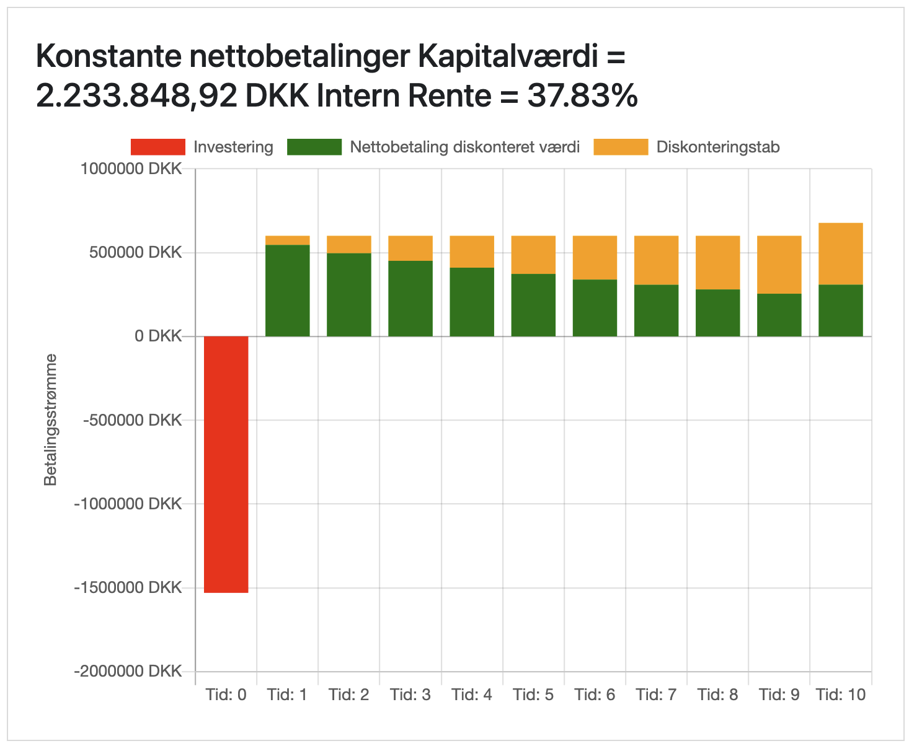

Temaprojekt 2 (OLA), del 3
Formål:
Formålet med temaprojektet er at give dig kompetence i at bruge, hvad ud har lært i
denne uge, i praksis.
Gnist:
Du skal nu lære, hvordan man anvender teori og værktøjer fra denne uge i
praksis, på en konkret virksomhed.
Beskrivelse:
I skal læse introen til temaprojektet herunder, før I går i gang med opgaverne.
OLA 2 Intro
Investeringscase: EDC Living Dragør overvejer udvidelse
Baggrund
Malene og Sam, der ejer EDC Living ApS, overvejer at
udvide deres forretning for at øge salget af ejerlejligheder. Virksomheden har
oplevet en positiv udvikling
med et overskud på 2.392.330 kr. i 2023 og en solid egenkapital på 2.532.864 kr.
pr. 31. december 2023.
Med den nuværende positive markedsudvikling inden for ejendomsmarkedet og
virksomhedens stærke økonomiske
fundament, overvejer ejerne at investere i åbningen af en ny butik i et
tilstødende område med højt
potentiale for salg af ejerlejligheder.
Investeringsoplysninger
- Forventet levetid for investeringen: 10 år
- Engangsudgift til markedsundersøgelse: 100.000 kr. (allerede
afholdt)
- Anslåede udgifter til indretning og møblering: 300.000 kr.
- Udgifter til ombygning af lejede lokaler: 450.000 kr.
- Depositum for lejemål: 200.000 kr.
- Indkøb af IT-udstyr og software: 150.000 kr.
- Marketing og lanceringsomkostninger: 250.000 kr.
- Rekruttering og oplæring af nyt personale: 180.000 kr.
- Årlig husleje for den nye butik: 360.000 kr.
- Forventede årlige personaleomkostninger for den nye butik: 1.800.000 kr.
- Andre årlige driftsomkostninger: 240.000 kr.
- Forventet antal årlige boligsalg fra den nye butik: 50
- Gennemsnitligt salær pr. boligsalg: 75.000 kr.
- Gennemsnitlige direkte omkostninger pr. salg (markedsføring, dokumenter,
osv.): 15.000 kr.
- Forventet scrapværdi efter 10 år: 200.000 kr.
- Virksomhedens kalkulationsrente: 10%
Vink:
Ovennævnte investeringsoplysninger kan i appen udregnes til følgende kapitalværdi.


Afsender:
Et team af eksterne rådgivere, I er eksperter indenfor investering.
Modtager:
Direktionen i EDC Living, dvs. Malene Harrild og Sam Crabtree.
Man må ikke kontakte virksomheden, i forbindelse med dette projekt.
Bemærk spørgsmålene i denne case hænger tæt sammen, teamet bør overveje at være fælles
om
opgaverne, men det skal fortsat, som altid, fremgå af hver opgave med navn, hvem der har
lavet
opgaven.
App til Investering og finansiering
Opgave 1
- Bestem kapitaltjenesten?
- Hvad er tilbagebetalingstiden med og uden rentekorrektion?
- Hvad bliver den interne rente?
Opgave 2
- Hvad er den kritiske værdi for scrapværdien?
- Hvad er den kritiske værdi for årlig husleje?
- Hvad er den kritiske værdi for årlige personaleomkostninger?
Vink: Man skal benytte Excel's Målsøgning/Goal Seek for at besvare spørgsmålene. Se
nærmere i video om specielle følsomhedsanalyser i:
Onlinebog: Investering og finansiering
Opgave 3
- Hvad er den kritiske værdi for antal årlige boligsalg?
- Hvad er den kritiske værdi for gennemsnitligt salær?
- Hvad er den kritiske værdi for gennemsnitlige direkte omkostninger pr. salg
(markedsføring, dokumenter, osv.)?
Vink: Man skal benytte Excel's Målsøgning/Goal Seek for at besvare spørgsmålene. Se
nærmere i video om specielle følsomhedsanalyser i:
Onlinebog: Investering og finansiering
Opgave 4
ID-Check
På onlineuddannelserne er der en procedure, hvor vi skal tjekke jeres ID. Og det skal
ske,
før du kan komme til eksamen.
Deadline for ID-tjek er den 15. november 2024 og er en del af OLA2.
Det kommer til at foregå således:
a. Du skal uploade et vellignende profilfoto på din Outlook-konto OG på Moodle (Mange
har allerede gjort dette).
Sådan
gør du:
Outlook: Gå Office 360. Vælg ”Min konto”. Klik på dine initialer i
øverste højre hjørne.
Klik på den
relevante konto. Upload profilfoto som anvist.
Moodle: Gå ind under ”Rediger profil”, scroll ned i bunden til
”Brugerbillede”. Upload
et
vellignende profilfoto.
b. Du skal fremvise ID for en underviser i LiveLearning. Dit ID-dokument skal have foto,
dit CPR-nr. og må ikke være
udløbet. Det vil typisk være pas eller kørekort.
c. Vi registrer, at du har fremvist gyldigt ID.
d. Du skal præsentere det samme ID-dokument i forbindelse med den mundtlige eksamen.
Zoomkonto tjek
Ved eksamen skal du bruge din Cphbusiness Zoomkonto. Så vi skal også tjekke, at du har
oprettet en Cphbusiness
Zoom-konto. Den skal benyttes når du gennemfører ID tjek. Hvis ikke du har fået oprettet
en Cphbusiness Zoom-konto skal
du følge denne vejledning:
https://cphbusiness.mrooms.net/mod/book/view.php?id=446303&chapterid=7065
Bemærk: dette er individuelt og skal IKKE med i selve besvarelsen.
Format
Teamet afleverer opgave 1-3 samt eventuel dokumentation i et samlet
word-dokument, med forside, indholdsfortegnelse, der overholder
metode-formalia.
Det skal fremgå hvem der har deltaget i udarbejdelsen af de
enkelte opgaver.
Dokumentation for team-samarbejdet
indsættes som bilag i samme dokument.
Der skal således kun afleveres et samlet word-dokument i afleveringsmappen.
Omfang:
Samlet omfang skal maksimalt være 4 normalsider.